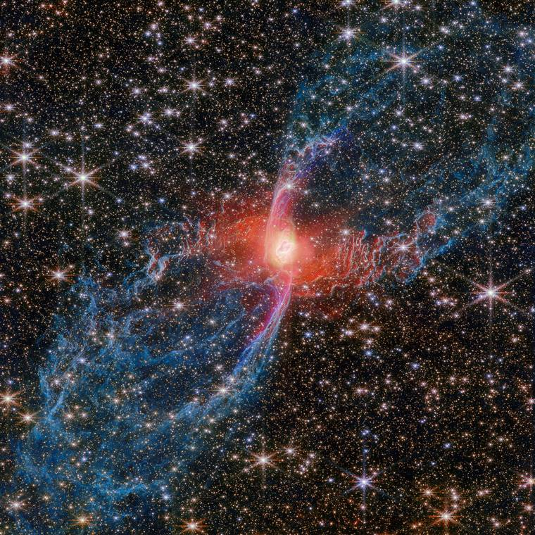

The Ic² Research Institute is an independent organization advancing the COSMIC Framework through falsifiable predictions and open science. The framework proposes information as the substrate underlying both quantum mechanics and general relativity. The work is ongoing and publicly documented.
The book and the Institute are both quests for clarity, but not the kind that makes reality simpler. Quantum mechanics did not make reality clearer in that sense. It made reality stranger, and every honest step since has followed that same direction. Whatever sits orders of magnitude below the Planck length is likely to be stranger still.
The clarity worth chasing is clarity of method: better questions, faster revision, and never defending an answer past what the evidence supports. Not final answers. Not comfort. A clearer way of standing in front of something strange.
Whoever the first human was, wherever they stood, one of the first questions was likely, “Where am I?”
Question. Quest‑ion.
That quest to find out was version one. We have been asking it ever since. Maybe that is what being human is: not the answer, but the asking.
The framework is in its sixth edition. What will the tenth look like?
Help us get there.
Every prediction is timestamped before the result arrives, and the record includes the ones that did not hold.
The fundamental substrate of reality. Matter and energy emerge from information patterns, not the other way around. Every physical phenomenon is, at base, an information process.
Self-referential information processing. The observer that interacts with and interprets the information substrate. Not separate from physical reality but a specific pattern within it.
The mechanism by which information evolves. Reality operates as a continuously self-updating process whose physical laws can be read as the rules of a computation.

Our logo, known as The Spinner, embodies the three foundational pillars of our research framework through its distinctive triangular form. Each element represents one of the three aspects of reality we investigate, while the overall structure illustrates their inseparable unity. To the right is Metatron's Cube: the same circular geometry and triangular relationships the Spinner is constructed from, expressed in full. The same structure appears at the quantum scale in QCD color space, as described below.
The yellow element represents Information as the fundamental substrate of reality. This is not information about reality: it is reality at its most basic level. Just as energy and matter are interconvertible (E=mc²), we understand physical reality as patterns of information that can be processed, transformed, and measured. From quantum mechanics to cosmology, information provides the common language that unifies seemingly disparate phenomena.
The green element represents Computation as the dynamic optimization process through which information evolves. Reality does not just exist. It continuously optimizes according to physical laws that can be understood as computational constraints. From the path integral formulation of quantum mechanics (nature exploring all possible paths to find optimal ones) to thermodynamic evolution toward maximum entropy, the universe operates as a vast optimization engine.
The red element symbolizes Consciousness as self-referential information processing, represented by the "²" (squared) in Ic². This is not simple duplication but the strange loop of information processing that models itself. We are not separate from the universe; our consciousness is completely composed of and integrated with it. On this view there is no boundary between "mind" and "physical reality": consciousness is physical reality, a specific pattern of information processing in quantum and electromagnetic fields.
When information patterns become complex enough to represent and modify their own processing, consciousness emerges. This is not mystical. It is a natural consequence of information systems achieving sufficient self-referential complexity. What we experience as thoughts, emotions and awareness would then be information processing patterns that are not separate from physics but part of it.
The framework proposes that emotions, too, are information processing patterns in these fields. When you feel joy, grief, love or fear, you are not experiencing something separate from physical reality; you are taking part in its information structure. If that is right, such patterns could persist after people leave a place, register in physical measurements, influence the people who come after, grow stronger when groups share them, and fade over time. Old ideas about "sacred spaces" and "emotional atmospheres" may be describing something physical. None of this is established. It is where the framework points, and it can be tested.
The implications would be large. How we treat each other would shape physical reality, not only our feelings about it. Caring communities would leave a measurable physical trace, and so would trauma. The atmosphere of a place would be a real pattern in the information structure of space. The mind-body problem would dissolve, because there was never a separation to bridge: subjective experience and objective measurement would be the same information patterns seen from two sides. The framework suggests that beauty, ethics and physics align because all three track information coherence.
The three elements form a triangle because they are not separate domains but three aspects of a single unified reality. Information without computation is static and inert. Computation without consciousness remains mechanical optimization. Consciousness without information substrate has nothing to process. They exist only in relationship to each other. You cannot have one without the others.
This geometric unity mirrors the deep insight from modern physics: reality is fundamentally relational. Nothing exists in isolation. Properties emerge from relationships. The triangle itself is the message: separation is the illusion; integration is the reality.
The hexagonal space at the center where the three elements meet is deliberately open: not empty, but unfinished. This openness represents several crucial concepts:
Emergence: When information, consciousness, and computation interact, something greater than their sum emerges. The open center is where subjective experience arises from objective processes, where meaning emerges from pattern, where novelty appears from deterministic laws.
Strange Loop: The open center represents the self-referential nature of consciousness itself. The observer observing themselves creates an infinite regress, the strange loop that Douglas Hofstadter identified as the essence of consciousness. The center is open because this self-reference never fully closes; consciousness always contains something that transcends its own computational substrate.
Incompleteness: Gödel showed that any consistent formal system rich enough to describe arithmetic contains true statements it cannot prove from within itself. The open center acknowledges that our framework, no matter how comprehensive, cannot fully capture all of reality from within reality. There will always be something more, something that emerges from the interaction but cannot be reduced to the components.
"The Spinner" is not static. It represents perpetual motion, continuous transformation. Reality is not a fixed structure but an ongoing process. Information patterns continuously update, computation continuously optimizes, consciousness continually integrates new information and modifies its own processing.
This spinning mirrors fundamental physics: quantum fields fluctuate, particles decay and transform, entropy relentlessly increases, galaxies rotate, consciousness flows. Even what seems permanent is actually dynamic equilibrium, stable patterns maintained by continuous energy flow, like a whirlpool that maintains its shape while the water constantly changes.
The spinning also represents iteration and recursion: the same patterns appearing at different scales, the same principles applying from quantum to cosmic domains. Each revolution of understanding brings us back to the same questions at a deeper level, revealing new layers of complexity within apparent simplicity.
The visual similarity to Einstein's famous equation is intentional. Just as E=mc² revealed the deep relationship between energy and matter, showing they are different manifestations of the same underlying reality, Ic² suggests that Energy emerges from the interaction of Information (I), Consciousness (c), and Computation (²).
Where E=mc² unified physics by showing matter and energy are interconvertible, Ic² proposes an even deeper unification: reality itself emerges from information processing that achieves self-awareness through computational optimization. This is not replacing E=mc² but contextualizing it. Mass-energy equivalence becomes a special case of information-consciousness-computation dynamics.
The equation is not only a symbolic parallel. It is a testable hypothesis about the fundamental structure of reality, with specific predictions about quantum mechanics, consciousness, cosmology, and the relationship between physical and mental phenomena.
The Spinner logo thus encodes our entire research program in a single geometric form: three irreducible aspects forming a unified dynamic process, with emergent properties arising from their interaction, all in continuous motion through time. It is not just a symbol of what we study. It is a visual representation of how reality works.
The color pairs used across this website are not chosen for aesthetics. They are drawn from Quantum Chromodynamics, the physics of the strong force, and they carry the same structural logic as the particles they are named after.
Quarks carry one of three color charges: red, green, or blue. Their antiparticles carry the anticolors: cyan, magenta, and yellow. Gluons, the force carriers of the strong force, carry a color-anticolor pair. No quark's color is ever directly observed, because confinement means only colorless combinations, called hadrons, can exist freely in nature. The color charge is defined entirely by how particles interact. No quark possesses a color in isolation. The property only exists in the relationship. This is the pattern that Element 1 identifies across all of physics: every property, without exception, is a relationship in disguise. The names red, green, blue, cyan, magenta, and yellow are entirely symbolic. Quarks are far too small to interact with visible light in any way. The labels were chosen because three color charges combine to produce a colorless result, the same way three primary colors of light combine to produce white, but the analogy is mathematical, not physical.
There is a structural parallel worth noting. The Vera Rubin Observatory uses six photometric filters spanning ultraviolet to near-infrared. To produce any color image, astronomers select three filters and map them to RGB display channels: actual photon wavelength bins assigned to human perceptual primaries for visualization. The resulting image logic is the same as QCD color logic. Three primaries combine to neutral. Anticolors cancel their partner. Red plus green plus blue equals white, whether the referent is light, strong-force charge, or a display model. QCD physicists chose the color metaphor precisely because this additive-neutrality structure was already familiar. The Vera Rubin Observatory uses the same structure because it is mapping real wavelengths onto the same human perceptual system. The correspondence between them is not coincidence but convergence: three independent domains arriving at the same organizational logic because the logic itself is doing something useful in each case.
The design system on this website uses the same pairs for the same structural reason. Each card's primary color and its accent are a quark-antiquark pair. Together they produce a visually neutral, stable unit. The logic is the same whether the domain is a photon wavelength, a strong-force charge, or a section border. The Rubin Observatory is among the instruments expected to test framework predictions as its survey matures. That the color framework of the instrument, the color framework of the physics it is testing, and the color framework of this website all operate on the same additive logic is not planned. It is simply what happens when the same structural solution appears in independent contexts.
What makes QCD color mathematically striking is what Element 4 establishes. There are eight gluon types, corresponding to the eight generators of SU(3) color symmetry. Each gluon type performs a specific rotation in three-dimensional complex color space. Together they form a complete gate set: any color transformation can be decomposed from operations in this set. The quarks are the qutrits, units with three states rather than a qubit's two. The gluons are the gates. The hadron is the stable output state of the computation. Physical rotation is state space rotation. The color labels are not decorative. They name the dimensions of the space in which the computation runs.
Nine QCD pairs in use on this site
Each card, accordion, or section on this site uses one pair. The primary color is the quark charge. The border or accent is the anticolor. Together they produce a colorless, stable visual unit. Reference: Element 4, A Quest for The Big TOE.

None of these is a photograph in the ordinary sense. Each is a set of measured wavelength bands assigned to red, green and blue so that a human visual system can read them, and the assignment is a choice made by the people who processed the data. These come from Webb and the Very Large Telescope rather than from Rubin, but the decision is the same one, and it is the same decision the palette on this site makes.
The Ic² Research Institute advances open research into the fundamental nature of reality through information theory, consciousness studies, and computational frameworks. The COSMIC Framework is the primary theoretical output, producing falsifiable predictions tested by independent experimental programs with no stake in the outcome.
Free collaboration and data transparency are not aspirational values. They are operational constraints. Every prediction is timestamped and published before results arrive. Every revision is logged. Failures are documented alongside confirmations. The scientific record is never silently amended.
All data, hypotheses, and results are public, including failures and iterations. Nothing is withheld to protect a narrative.
Predictions are documented and dated before results arrive. Every revision is logged. The scientific record is never silently amended.
Contributions are evaluated on merit and insight. Institutional affiliation is not a prerequisite. Contributors retain ownership of their work.
Every theoretical claim must be falsifiable through observable prediction. Assertions without falsification criteria are not accepted into the framework.
Limitations are stated clearly. All outcomes are reported. Red results are not suppressed. A falsified prediction is data, not a failure.
Knowledge belongs to everyone. Review happens in the open, nothing published sits behind a paywall, and no affiliation is needed to take part.
Founder and Principal Researcher: Michael K. Baines. Aerospace engineer, independent researcher and author, based in Bangkok. ORCID: 0009-0001-8084-3870. Author of A Quest for The Big TOE, the primary published output of the COSMIC Framework. His engineering career includes Bombardier in Montreal (the C Series program), Boeing and Jacobs Engineering Group.
The Institute operates without traditional hierarchy to encourage interdisciplinary exploration. Contributors from any background are welcome. Contributions are evaluated on merit. Every contributor retains full ownership of their work and receives attribution in the public record.
Want to contribute? See the Contributions page for how to get involved.
Connect through any of these channels